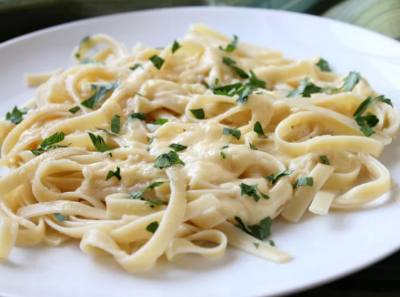

Home
Previous Page
Creamy Alfredo

Creamy Alfredo
"This Alfredo sauce recipe always turns out rich and creamy! A delicious way to transform plain fettuccine pasta or steamed vegetables."
- Butter
- Heavy cream
- Parmesan cheese
- Garlic
- Fresh parsley
- Melt the butter, then stir in the cream and simmer.
- Whisk in the cheese and garlic until heated through and smooth.
- Stir in the parsley.
- Serve with pizza, spaghetti, lasagna, and much more.